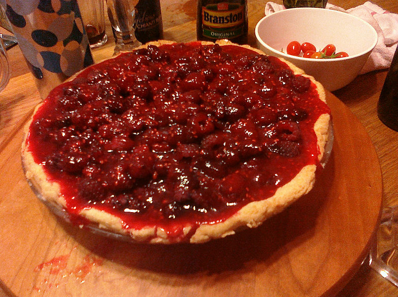
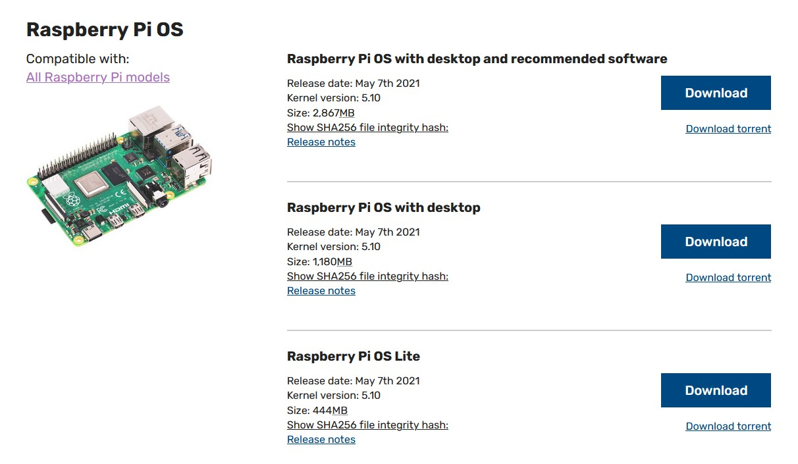

Contents:
I love Raspberry Pi 🥧
And if you don’t, well, that’s an opinion and that’s okay. But for those of you who share my sentiment, you’ve likely found yourself in a similar situation:
You’ve got a brand new Pi, fresh from the oven - maybe it’s your first one - and now it’s time to boot it up! But… it’s just a little circuit board, it has no screen. No keyboard, touchpad or mouse either.
That’s no problem, though, it has an HDMI out! And (if you have the model B) 4 whole USB ports! So you reach into the nest of cables behind your tower to unplug your second monitor. Whoops, wrong one. Okay, next is a keyboard. You want to keep using your PC in case you need to troubleshoot, though. But there’s an old wired keyboard in the closet! Hmm, it’s a PS2 connection. You’re sure have an adaptor somewhere though…
And finally, hours later, your Pi is officially booted! But now it’s time for dinner and you’re kind of over the initial excitement of your new toy. And boy, do you not want to have to go through all of that again when you inevitably get your next Pi. I know I didn’t.
But, what if I told you it didn’t have to be this way? What if I told you we could skip all this inconvenience with nothing more than a couple little text files? What if I told you I thought I was going to make a Matrix reference, but Laurence Fishburne never actually says the words ‘what if I told you…’ in his monologue to Keanu?
Prep the SD Card
Note:
If you purchased a new Raspberry Pi, it probably came with a micro SD card. If it did not, pause here and acquire yourself one! We’ll need it to move any further.
Right, let’s take a step back here. Before we can do anything with the Pi we need to install an operating system to boot. The Raspberry Pi doesn’t use a traditional hard drive with a SATA connection - instead, the whole operating system runs from flash memory on a micro SD card. So let’s get ourselves an OS and prepare our SD card.
Download an Operating System
Raspberry Pi is almost 10 years old now and there are a host of operating systems that the little board can run, but today we’re going to use the standard Raspberry Pi OS developed by the Raspberry Pi Foundation for their namesake SBC. Head on over to the downloads page and choose the version that’s best for you.

Most of the time I don’t need a GUI for my Pis so I’m choosing Lite, but if you want a desktop, go for it! (If you do, the middle selection is probably the best choice - we can always install more software later, and the recommended software download is almost 2.5x the size.) We’ll talk a little later about using the GUI remotely.
Flash the Micro SD
Now to flash our OS onto the micro SD card. There are many different ways to accomplish this and today I’ll be using a Windows machine to flash the disk using balenaEcher (which is also available on Mac OS). Select your OS image, make sure you’re choosing the correct drive, and before you click Flash!, check again that you’ve chosen the correct drive. The flashing process may take a few minutes. (Hopefully you chose the correct drive.)

Enable SSH & WiFi
Notes:
- I’ve had trouble in the past getting the initial WiFi setup to work with other operating systems, such as DietPi. However, enabling SSH has always worked for me. If this is the case for you, just enable SSH, connect via ethernet and set up WiFi manually.
- If you have a model of Pi without WiFi capabilities, skip the “Enabling WiFi with
wpa_supplicant.conf” section. You can still enable SSH and connect to your Pi via ethernet.
You may need to eject and re-insert the card for it to show up in your filesystem. Once we’ve done that, you’ll notice the drive has been renamed boot and is full of new files. We don’t want to change anything in here, we’ll only be adding two new configuration files. Follow the instructions below to create the necessary files.
Enabling SSH
First, we’ll create an empty file named ssh with no file extension. If you’re using the terminal/command line, navigate into your mounted drive and enter one of the following commands based on your operating system. Easy!
Unix (Linux / Mac OS)
touch ssh
Windows
echo > ssh
If you aren’t using the terminal/command line, this can also be done with a raw text editor like Notepad (or your favorite IDE). Simply open your editor and save the empty file with no extension - just make sure it’s a raw text editor (or IDE) and not a word processor like Microsoft Word!
Enabling WiFi with wpa_supplicant.conf
Next, we’ll specify our WiFi credentials with a file called wpa_supplicant.conf. Just like before, make sure to create this file with an IDE or raw text editor. Linux / Mac OS users can create and edit this file all in the terminal with the command nano wpa_supplicant.conf. Windows doesn’t offer a native way to edit files in the command line, but you can open Notepad easily with the command notepad wpa_supplicant.conf.
Unlike our ssh file, this one needs some content to have an effect. The example below is pretty basic, but it works for me. (If you have any trouble, check the documentation.) Just replace network_name with the SSID you’d like the Pi to connect to and replace password with the associated password.
country=us
update_config=1
ctrl_interface=/var/run/wpa_supplicant
network={
scan_ssid=1
ssid="network_name"
psk="password"
}And That’s It!
Finally we can eject our SD card, insert it into the Pi and power it up! Give it a few moments to boot, and a few moments longer for it to connect to the network if you’re using WiFi.
Connecting to the Pi
Now that our Pi is booted and connected to the network, we can connect to it with our local machine, but to do this we first need the Pi’s IP address. Often, the easiest way to do this is via the Devices list in your router’s web interface.
Your router’s IP address is typically something like 192.168.1.1 (mine is 192.168.0.1) and you can connect to it by visiting that IP address in your web browser, e.g. http://192.168.1.1/. All routers are different, but a quick Google search with your router’s make and model number plus the words “web interface” should help you navigate yours. If you don’t know the login credentials, they are usually printed on a label somewhere on the router.
Once there, navigate to your router’s Devices or Clilents list and look for an IP address with the hostname “raspberrypi” - this is the default for a machine running Raspberry Pi OS. My Pi was given the IP address 192.168.0.41, yours will probably be different.
Notes:
If you aren’t having luck interfacing with your router, the Raspberry Pi Documentation offers up some additional terminal-based methods for determining your IP address.
Connect Over the Terminal with SSH
The time has come at last, we can finally connect with our Pi for real. Using our newly minted IP address, we’ll open up our terminal/command line and use the command ssh pi@<your-ip-address> to open a secure shell connection to the Pi. The default password for a new Raspberry Pi OS install is raspberry.
Connecting for the first time will look something like this:

A Little Housekeeping
Using our SSH connection, we’ll take two more quick steps to ensure our Pi is updated and secure:
- Remember that default password of
raspberry? That’s not terribly secure, so let’s change it with the commandpasswd. - We’ll
updateandupgradeour software to make sure everything’s up to date. These commands will take a bit of time, but you can chain them together with “&”, automatically answer yes to theupgradecommand with the flag “-y”, and go pour yourself some coffee while the process completes.
# 1. Change the default password
# Remember, your passwords will not display as you type them
$ passwd
Changing password for pi.
Current password:
New password:
Retype new password:
passwd: password updated successfully
# 2. Update & Upgrade
$ sudo apt-get update
$ sudo apt-get upgrade
# OR
# Chain together & answer 'yes'
$ sudo apt-get update && sudo apt-get upgrade -y
# Now we wait!And congratulations, your Pi is ready to go! I can’t wait to see what you make with it!
Until next time
Appendix
Optional: Using the Desktop GUI Remotely with VNC
So you downloaded the Raspberry Pi OS with desktop and now you want to use the GUI instead of a boring old terminal connection? No problem, we can do that with VNC!
From Wikipedia:
Virtual Network Computing (VNC) is a graphical desktop-sharing system that uses the Remote Frame Buffer protocol (RFB) to remotely control another computer. It transmits the keyboard and mouse input from one computer to another, relaying the graphical-screen updates, over a network.
Raspberry Pi OS comes pre-loaded with RealVNC’s VNC Server, allowing it to be controlled remotely by another computer. To use it, we need to:
- Enable VNC Server on the Raspberry Pi
- Connect to your Pi via SSH using the instructions above.
- Start the configuration tool with the command
sudo raspi-config. You’ll be met with a screen like this:
- Navigate to
Interface Options, thenVNCand answer ‘Yes’ when asked to enable VNC.
- Install VNC Viewer on our Local Machine and Connect!
- Visit the VNC Viewer download page and install the appropriate software on your local machine.
- Run the VNC viewer and enter your Pi’s IP address in the bar at the top of the window. (The application will warn us that it doesn’t regonize this server, which is normal since this is the first time we’ve connected to it.)
- Finally, enter your credentials and voilà! You can use the Raspberry Pi’s desktop right in the VNC Viewer window!

Troubleshooting: WiFi not Connecting?
Trying to connect via WiFi and can’t seem to find your Pi’s IP address on your network? First, make sure your model of Pi actually supports WiFi! Once you’ve done that, you may want to double-check the credentials in your wpa_supplicant.conf file and try again, but it’s typically faster and easier to just connect via ethernet, ssh into the machine and set up WiFi manually with the raspi-config tool.
- Connect to your Pi via SSH using the instructions above.
- Start the configuration tool with the command
sudo raspi-config. You’ll be met with a screen like the one above. - Choose
System Optionsand thenWireless LAN. You’ll be asked for your SSID and password, and you’re done!
This page lovingly generated by Quarto ❤️